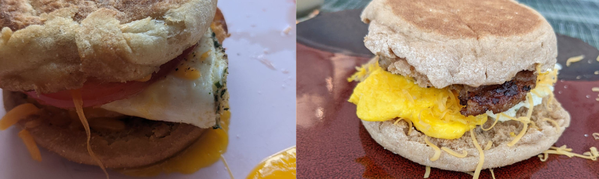

Welcome to Alicia's Cookbook!
Alicia's Cookbook is a personal recipe collection from Alicia Sibole. Alicia is a 21-year-old woman who has a busy life but enjoys taking time to meal prep and cook. This website serves as a platform to document and share her favorite recipes.
These recipes have been sourced, developed, and created over time through a combination of family, google, and experimentation. Meal planning amidst a busy life is difficult, especially when you care about eating things that are healthy and satisfying. This site takes the guesswork out of meal planning in a way where you can just select a meal at-random in any category, purchase the ingredients, and create the meal.
In general, these meals require low-levels of skill and equipment. You should be able to make most of the dishes within an hour.
We hope you enjoy the recipes as much as we do!
Learn moreBrowse our Recipes
|  | |
| Breakfast | Lunch |
| Dinner | Snacks & Dessert |
View Quick & Helpful Information
Think of the best cook you know. Don't they always seem to know these little tricks that seem to be magic?
"Oh, to thicken the sauce, just add corn starch!"
"Add ginger ale to your waffle mix to make it fluffier!"
"Always sale your pasta water"
Have you ever wished you had a list of all these seemingly-crazy but amazing tips in one place? Well, as we go about our cooking journey, every tip we learn will be placed here so you can gain the knowledge, too.
Read the tips